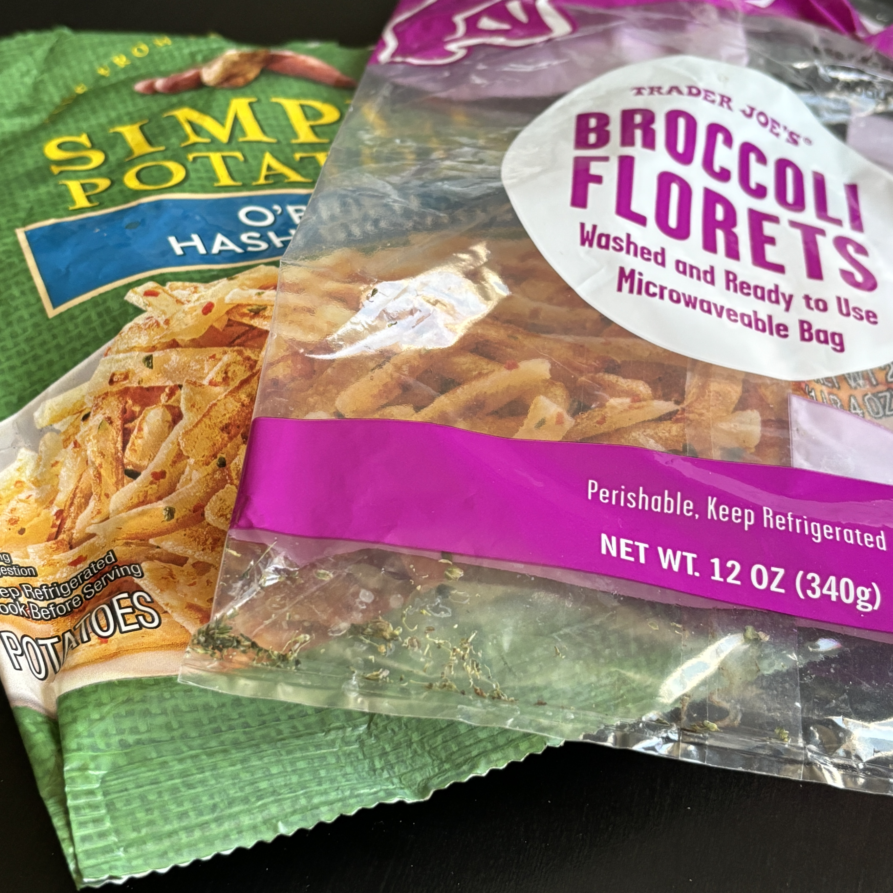
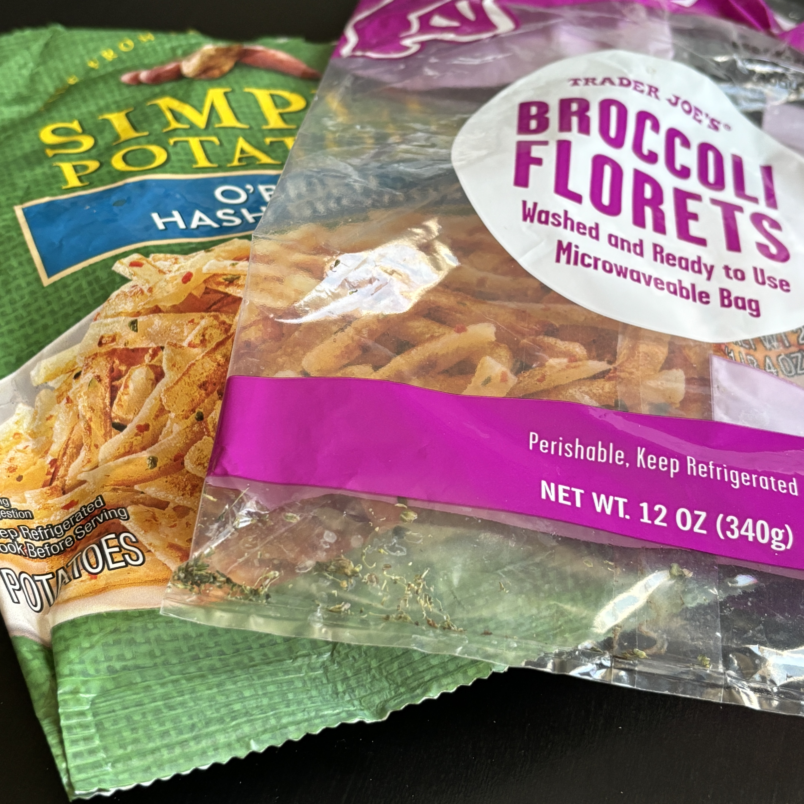

Manufacturing Processes
Wood Fibers, Pulp, and Lignin

Paper and board are made from fibers harvested from trees. Hollow cellulose fibers make up xylem in trees and plants that carries water and nutrients to the leaves. The fibers are impregnated with lignin, a compound that holds the fibers together and gives the tree strength.
Lignin, when included in paper and exposed to air, oxidizes and turns yellow which, unless it’s part of a vintage look, detracts from the appearance of the paper and reduces the color gamut.
Lignin can be removed by bleaching with sulfate compounds, which adds to the cost and weakens the fibers.
Examples of bleached and unbleached board are solid bleached sulfite (SBS) and solid unbleached sulfate (SUS).
Coating
Since paper consists of absorbent cellulose fibers, ink tends to soak in and reduce the sharpness and color gamut of print. Clay or polymer coatings, when applied to paper and board, help hold out the ink, brighten the paper, and create more saturated colors.
Quality Testing
Various tests can be done to test the quality and durability of papers and packaging boards.
A common measurement of paper and board quality is brightness, which can be measured with a dedicated brightness meter, or with a pressroom spectrophotometer set to Brightness. The brightness scale ranges up to a theoretical 100, but more commonly measures in the 90’s, which means the substrate reflected e.g. 90% of incident light. Since the main factor reducing brightness is yellowing lignin, brightness is measured with blue light at 457 nm wavelength.
Other tests include tensile strength, folding endurance, smoothness, and gloss.
Common Packaging Substrates | |
| Substrate | Uses |
| Kraft paper (from German “kraft” = strength) | Unbleached (brown) paper, used for paper bags that require the strength that comes from not bleaching the paper pulp. |
| Solid bleached sulfate (SBS) | White board, used in food, pharmaceutical, cosmetic, and similar packages, where white gives the feeling of quality and purity. |
| Solid unbleached sulfate (SUS) | Brown, unbleached board, used for consumer electronics as well as food, nutritional supplements, and cosmetics that want to convey and ecological image |
| Coated one side (C1S) | Brown board that has a white coating on one side. The coating helps hold out ink and increase the color gamut and image sharpness of the board. Commonly used for dry boxed foods like cereal or pasta. |
| Coated two sides (C2S) | Used when the manufacturer wants board that's white on both sides. The coating increases the cost of C2S vs. C1S, so the manufacturer may more likely opt for SBS which is white throughout. |
| Corrugate (cardboard) | Thick board consisting of 3 layers, including outer smooth layers and an inner corrugated layer. Used for shipping containers and appliance boxes. Sometimes printed with lithography. The outer layer may have a white coating for increased color gamut and/or quality appearance. |
| Polyethylene bags | White or clear plastic bags for frozen food, produce, bread, and similar items. |
 
